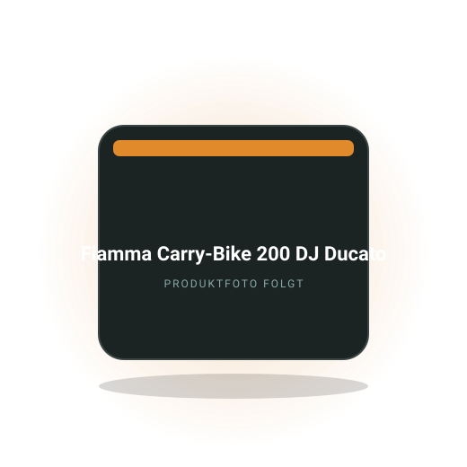
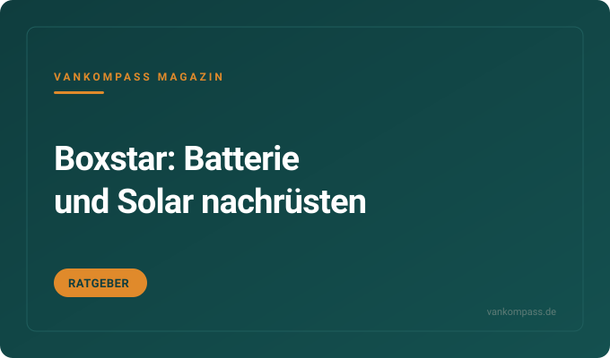
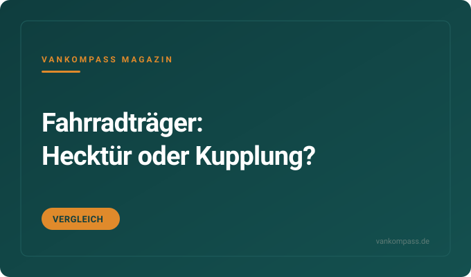
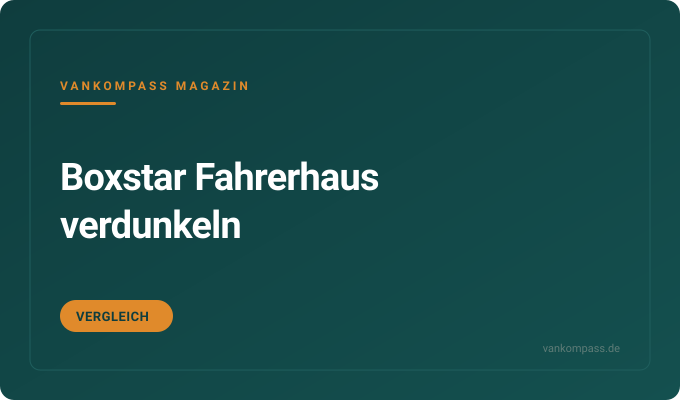
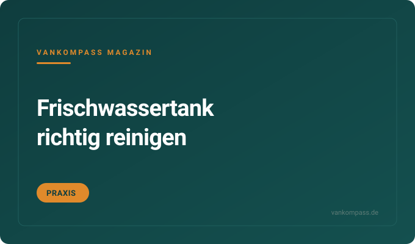

Ratgeber · Cockpit
Gebrauchter Campervan oder Neuwagen? Was der Händler im Video sagt
Ein Händler vergleicht einen Knaus Boxlife von 2016 mit einem neuen Sunlight Cliff. Was das Video zeigt und welche Gegenargumente er nennt.
Camper · Boxstar / Boxlife
Für Besitzer von Knaus Boxstar und Boxlife: Hubbett und Matratze, Bordbatterie und Solar, Fahrradträger an den Hecktüren, Verdunkelung im Fahrerhaus. Ratgeber, Vergleiche und eine Kaufempfehlung für die Kastenwagen aus Jandelsbrunn.

Redaktions-Tipp
Der Hecktürträger für Kastenwagen auf Ducato-Basis, der die Heckgarage von Boxstar und Boxlife für Gepäck freihält.
Warum wir es empfehlen: Boxstar und Boxlife stehen auf dem Fiat Ducato, deshalb passt der Träger ohne Anpassung an die Hecktüren. Die Räder fahren außen mit, und die Garage unter dem Bett bleibt für Boxen, Stühle und Tisch frei.
Preis-Rangeca. 250 bis 450 €Stand Oktober 2026
Bei Amazon ansehenAffiliate-Link *Traglast je Tür vor dem Kauf prüfen, bei E-Bikes entscheidend. Preis bleibt für dich gleich.
Kostenlos als PDF
Strom, Schlafen, Küche, Sanitär, Sicherheit, Werkzeug. Zum Abhaken vor jeder Fahrt, damit du nie wieder ohne Ladekabel, Wasserschlauch oder Keil losfährst.
Ein Händler vergleicht einen Knaus Boxlife von 2016 mit einem neuen Sunlight Cliff. Was das Video zeigt und welche Gegenargumente er nennt.
Warum das Hubbett anders schläft als ein festes Bett, welche Topper passen und was bei Höhe und Gewicht zu beachten ist.

Welche Batterie in den Boxstar passt, wie Solar mit dem Bordsystem zusammenspielt und was die Nachrüstung kostet.

Welche Träger an den Ducato-Hecktüren passen, was sie tragen und wann der Kupplungsträger für E-Bikes besser ist.

Welche Lösungen für Front- und Seitenscheiben passen, was sie gegen Hitze und Blicke bringen und was sie kosten.

Schritt für Schritt vom Entleeren bis zum Nachspülen, mit Dosierungen und Einwirkzeiten für gängige Reiniger.
Die Fragen, die am häufigsten gesucht werden. Ausführlich beantwortet, mit Zahlen, Rechenwegen und den Fehlern, die du dir sparen kannst.
Für das Hubbett im Knaus Boxlife passt ein Topper mit 4 bis 6 Zentimetern Stärke aus Kaltschaum oder Viscoschaum, zugeschnitten auf die Bettmaße von etwa 190 bis 200 mal 140 bis 160 Zentimeter je nach Modell. Vorher das eigene Bett ausmessen, die Maße unterscheiden sich zwischen den Grundrissen.
Das Hubbett hat eine vergleichsweise dünne Matratze, weil die Mechanik Gewicht und Bauhöhe begrenzt. Ein Topper mit 4 Zentimetern bringt spürbar mehr Komfort, ohne die Kopffreiheit stark zu verringern. Dickere Topper ab 8 Zentimetern wiegen mehr und können die Hubmechanik belasten, hier gilt die Herstellerangabe zur Zuladung des Betts. Zweiteilige Topper lassen sich leichter handhaben, wenn das Bett hochgefahren oder die Garage beladen wird. Fertige Zuschnitte kosten ca. 100 bis 300 Euro, Maßanfertigungen mehr.
Oft vergessen: Unter der Matratze staut sich Feuchtigkeit, besonders im Winter. Ein Lattenrost-Vlies oder eine Abstandsmatte für ca. 50 bis 150 Euro lässt Luft zirkulieren. Und beim Hochfahren des Betts den Topper fixieren, sonst rutscht er. Zum Ratgeber Boxlife Hubbett
Der Knaus Boxstar ist ab Werk je nach Baujahr und Ausstattung mit einer AGM- oder Gel-Batterie um 80 bis 95 Ah ausgestattet, in neueren Modellen gegen Aufpreis auch mit Lithium. Erweitern lässt sie sich durch Tausch gegen eine LiFePO4 mit 100 bis 200 Ah oder eine zweite Batterie gleichen Typs, sofern Platz und Ladetechnik passen.
Die Serienbatterie sitzt meist unter dem Fahrer- oder Beifahrersitz oder im Sitzkasten. Bei einer Lithium-Umrüstung müssen Ladegerät und Elektroblock Lithium unterstützen, sonst wird die Batterie nicht voll oder altert vorzeitig. Bei Euro-6-Ducato kommt ein Ladebooster für ca. 150 bis 350 Euro dazu. Solar auf dem Dach mit 150 bis 300 Watt kostet ca. 300 bis 800 Euro mit Regler und lädt im Sommer eine 100-Ah-Batterie an einem Tag nach. Vor dem Kauf im Handbuch prüfen, welches Bordsystem verbaut ist, da Knaus über die Jahre verschiedene Hersteller eingesetzt hat.
Tipp: Erst den eigenen Verbrauch messen, dann die Kapazität wählen. Viele Boxstar-Besitzer kommen mit 100 Ah Lithium und Solar mehrere Tage aus. Zum Ratgeber Boxstar Bordbatterie und Solar
An den Knaus Boxstar passen Hecktürträger für Fiat Ducato ab Baujahr 2006, etwa von Fiamma oder Thule, für ca. 250 bis 500 Euro, oder Kupplungsträger, wenn eine Anhängerkupplung vorhanden ist, für ca. 400 bis 900 Euro. Für zwei E-Bikes ist der Kupplungsträger meist die bessere Wahl.
Hecktürträger werden an den Türscharnieren und am Türblatt der linken oder beider Hecktüren montiert, ohne zu bohren. Sie tragen je nach Modell zwei bis vier Räder mit zusammen 35 bis 60 Kilogramm, wobei die Traglast der Tür entscheidet. Zwei E-Bikes mit je 25 Kilogramm liegen oft an der Grenze. Kupplungsträger tragen 50 bis 70 Kilogramm, lassen sich abklappen und erlauben so das Öffnen der Hecktüren. Dafür kostet die Kupplung am Ducato zusätzlich ca. 600 bis 1200 Euro mit Montage.
Oft vergessen: Mit dem Träger wächst die Fahrzeuglänge um 50 bis 80 Zentimeter, und das Kennzeichen muss sichtbar bleiben, sonst ist ein drittes Kennzeichen nötig. Akkus der E-Bikes während der Fahrt abnehmen und im Fahrzeug lagern. Zum Vergleich Fahrradträger für Knaus
Das Fahrerhaus beim Knaus Boxstar verdunkelst du mit einer Außen-Thermomatte für Front- und Seitenscheiben, mit Innenmatten an Saugnäpfen oder mit einem Vorhang auf einer Schiene hinter den Vordersitzen. Viele neuere Boxstar haben ab Werk ein Plisseesystem im Fahrerhaus, das die Scheiben von innen abdeckt.
Außenmatten für ca. 150 bis 300 Euro verdunkeln vollständig, isolieren gegen Hitze und Kälte und verhindern Kondenswasser an den Scheiben. Innenmatten für ca. 50 bis 150 Euro sind schneller angebracht und vor Diebstahl geschützt, isolieren aber weniger. Ein Vorhang hinter den Sitzen für ca. 40 bis 150 Euro trennt den Wohnraum ab, lässt das Fahrerhaus aber ungeschützt. Werksseitige Plissees sind bequem, dichten an den Rändern aber nicht vollständig ab und sind bei Sommerhitze schwächer als Außenmatten.
Praxis: Im Sommer die Außenmatte silbern nach außen anbringen, im Winter die isolierende Seite nutzen, falls die Matte zwei Seiten hat. Und vor der Abfahrt prüfen, dass keine Matte zwischen Tür und Rahmen klemmt. Zum Vergleich Boxstar Fahrerhaus verdunkeln
Der Boxstar ist der klassische Kastenwagen von Knaus mit festem Heckbett und Heckgarage darunter, der Boxlife hat ein Hubbett im Heck, das tagsüber unter die Decke fährt und so eine große Garage mit Stehhöhe freigibt. Beide stehen auf dem Fiat Ducato und werden in mehreren Längen angeboten.
Beim Boxstar liegt das Bett quer oder längs auf fester Höhe, darunter ist die Garage je nach Modell 70 bis 100 Zentimeter hoch. Beim Boxlife lässt sich das Hubbett in verschiedene Höhen fahren, sodass darunter Fahrräder stehend hineinpassen oder tagsüber eine Sitzgruppe entsteht. Der Preis dafür sind etwas weniger Kopffreiheit über dem Bett, eine Mechanik, die Gewicht und Wartung mitbringt, und bei manchen Grundrissen eine kleinere Küche. Beide Reihen gibt es mit 5,41 bis 6,36 Metern Länge, der Boxlife meist in den längeren Varianten.
Für wen was passt: Wer Fahrräder oder sperriges Sportgerät regelmäßig im Fahrzeug transportiert, profitiert vom Boxlife. Wer vor allem ein festes Bett ohne Umbau will, ist mit dem Boxstar einfacher unterwegs.
Noch nicht geholt?
120 Punkte nach Bereichen sortiert. Dazu neue Video-Tests und Ratgeber, sobald sie online sind.